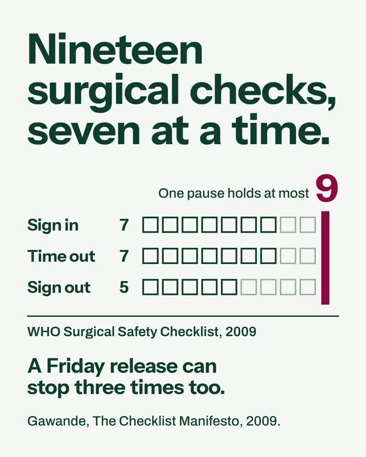
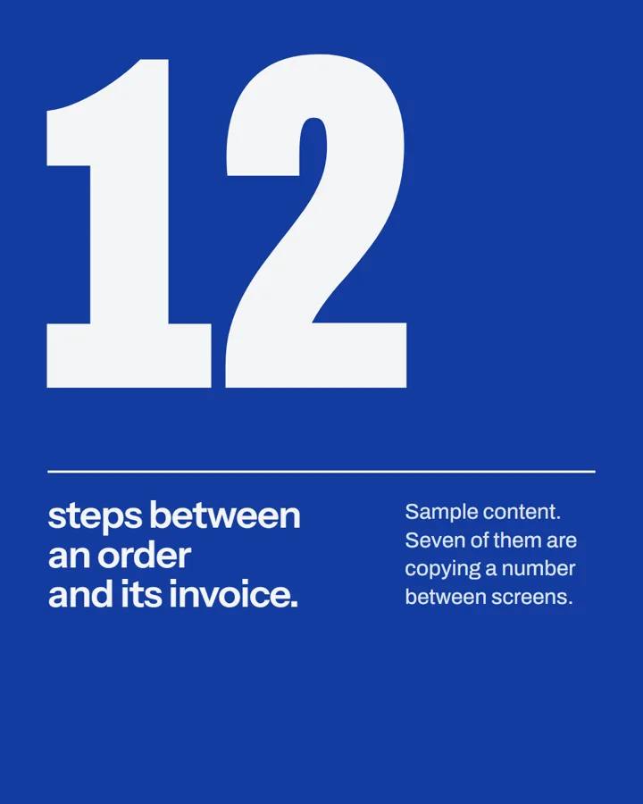
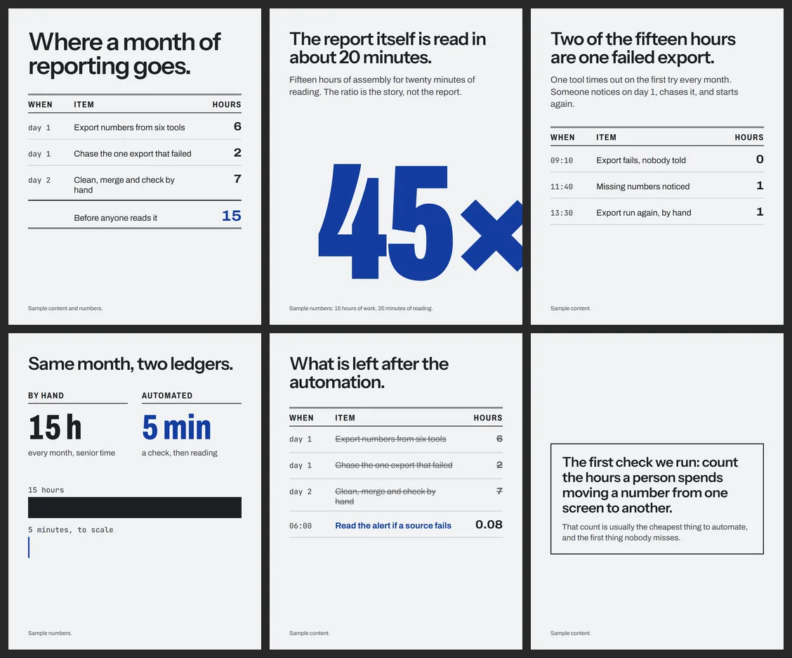
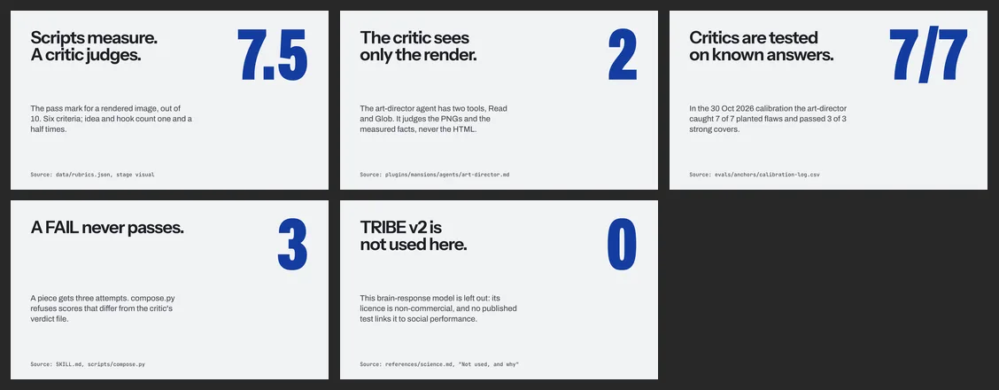
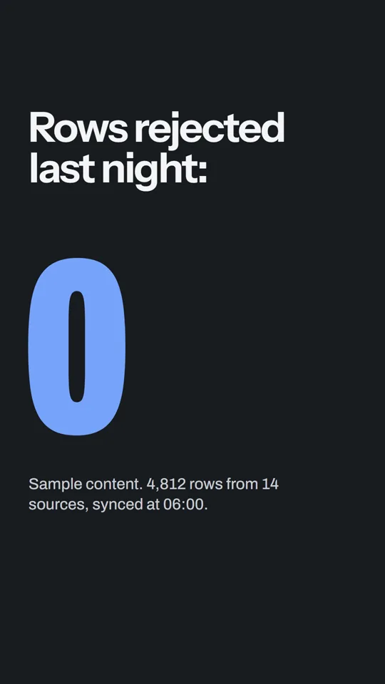
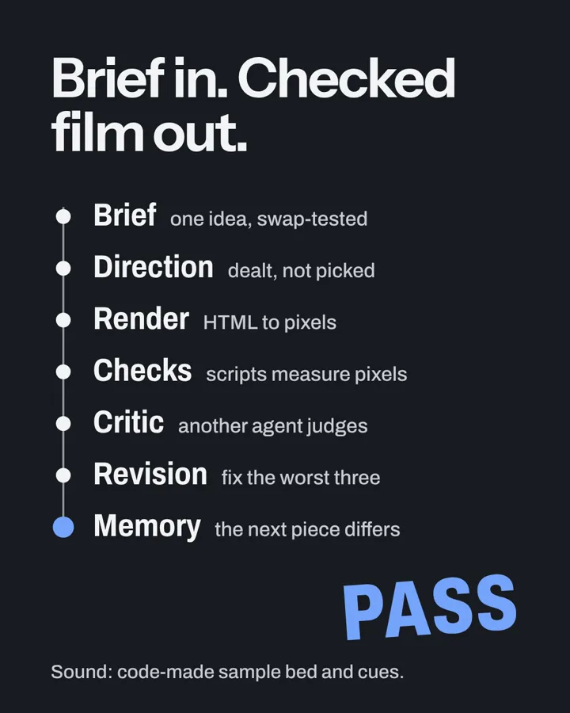

Single image
From a real run of the quick path. It passed the art-director at 7.5 on its second attempt, with a made-up sample brand.
A design studio inside one Claude Code skill. It makes social images, carousels, slides and short films in HTML and renders them locally. Scripts measure every page. Then a critic agent that did not make the piece judges the render.
Each new piece is dealt a design away from the ones before it, so the feed does not repeat itself.
It picks the mode from the ask and the platform: single image, poster, carousel, slides, story, motion film or film with sound. Each mode has its own sizes, checks and critics.

From a real run of the quick path. It passed the art-director at 7.5 on its second attempt, with a made-up sample brand.

One claim with its proof. The editorial-poster specimen, with sample content. Print sizes are not checked.

Six pages as PNGs and one PDF for a LinkedIn document. Every page passes the audit in CI. Sample content.

Five 16:9 slides. Each claim cites the file that proves it. They pass the audit and deck_check.py.

9:16, with text kept out of the zones where the platform draws its buttons. Sample content.
10 s, 9:16. A dot traces the week and a counter rolls, then settles. It passes video_check.py. Sample numbers.
An 8 s split-flap board, drawn by window.seek(t) and stepped frame by frame. It passes video_check.py. Sample content.

The film at the top of this page; its words are about Atelier, its sound is code-made sample sound. One timeline file times the picture, the effects and any voice captions. Play it with sound.
It runs like a small studio with a gate at every step. The maker builds. Scripts measure. Critics who did not build the piece judge it. Memory keeps the next piece from repeating the last.
These three diagrams are pages too: Atelier's render.mjs drew them and its audit passed them, with a word-count warning on each, since a diagram carries more words than a post.
Removing the tells of AI design is not enough: a page with every cliche removed and nothing in its place is empty and polite. Every piece needs a material idea, a direction dealt on purpose, and proof that it works, measured on the render.
Sourced facts first, then one angle, then a dealt design: direction, register, type, colour plan, hook and layout. Eight stages each have a rubric and a pass mark. process.md, composer.md
One subject and one claim per page. One accent, under 5% of the page. Real numbers only, with sources. Replace, never just remove. SKILL.md, Hard rules
Art directions with specimen pages, type pairings, colour plans in OKLCH and eight film styles. A brand file keeps the brand's hues. directions.md, colour.md, film-styles.md
Type floors measured as drawn, contrast of 4.5:1, no text over text, the first glance led by the hook, the number or the object. Films: something new every 2 to 4 seconds and words held long enough to read. critique.md, motion.md, sound.md, slides.md
A score from a model is only worth something if the model cannot be flattered and has been tested on known answers.
Meta's TRIBE v2 predicts brain responses to media, and it is sometimes suggested as a "neuro" score for content. Atelier does not use it. As of October 2026 its licence is non-commercial (CC BY-NC 4.0), and no published test links its predictions to social performance.
Atelier uses the evidence such tools try to imitate: a table of studies graded strong, medium or weak, rules measured on the render, a simple attention model it calls a rough guide, and critics tested on known answers. science.md
Atelier combines the work of others. Each project below is credited with its author and licence; vendored files are pinned to a commit in vendor/MANIFEST.md.
The render tools are installed separately, not bundled: Playwright and Chromium, ffmpeg, Python with Pillow, and Node. The full list with what each project taught: CREDITS.md.
It needs Claude Code, Node 20 or newer and Python 3.10 or newer. In Claude Code:
/plugin marketplace add goofypluto999/atelier
/plugin install atelier@mansionsThen, in the project folder for the image:
npm i -D playwright@1.63.0
npx playwright install chromium
python3 -m venv .venv
. .venv/bin/activate
pip install -U "pillow>=10.3" playwright==1.63.0Then ask Claude: Use Atelier to make one image about [your topic]. Use only these facts: [facts, with sources]. Windows steps, the manual path and the claude.ai zip: the README.